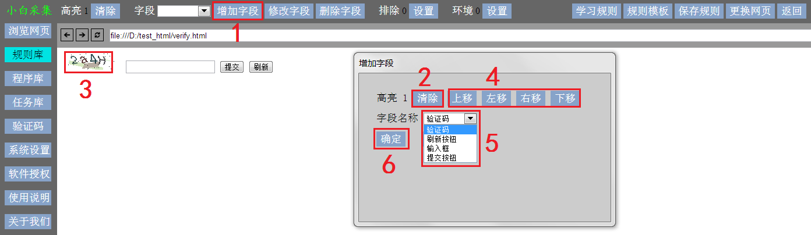

增加字段。验证码识别规则需要设置下面 4 个字段：
验证码：验证码图片
刷新按钮：刷新验证码的按钮
输入框：验证码输入框
提交按钮：输入验证码后的提交按钮
-
点击 增加字段 按钮，弹出 增加字段 对话框
-
点击 清除 按钮，清除当前的选择
-
将鼠标移到目标数据上，点击鼠标右键，选择目标数据。如果目标数据有多行，可以选择2-3个目标数据
左上角高亮数字为选择的目标数据数量。如果与预期不符，点击 清除 按钮后重新选择
-
根据需要，点击 上移 左移 右移 下移按钮，调整选择的目标数据范围
-
点击 字段名称 下拉选择框，选择相应的字段名称
-
点击 确定 按钮，提交字段
